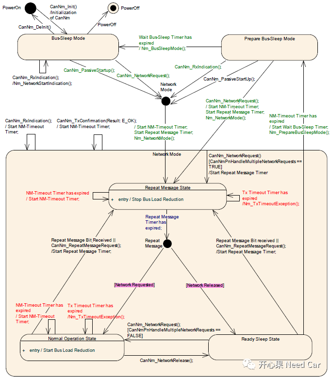

开心果 Need Car · 2021-10-04T11:30:00+08:00 · 微信原文
AUTOSAR网络管理实际工程项目中，有时会对一些概念理解不清或者需求不清楚的情况，不知道你是否有同感？本篇就一些网络需求和概念东西做一些分享。
Network Mode对应网络开发人员并不陌生，它包含Repeat Message State、Normal Operation State、Ready Sleep State三个子状态。Network states包含requested和released两个子状态。
Network states表示，软件组件是否需要在总线上进行通信，通信与否需要调用CanNm_NetworkRequest/Release接口，接口的调用需要根据实际项目的需求开发，如：收到有效的Power On信号等。
节点收到总线NM报文，且没有调用CanNm_NetworkRequest，通信是如何起来的呢？

如上图(1)，网络在BSM状态收到NM报文，有两种方式进入NM(Normal Mode)，一种是调用CanNm_NetworkRequest接口，另一种是调用CanNm_PassiveStartup接口。
CanNm_NetworkRequest接口：这种方式由实际开发需求决定，因为CanNm_NetworkRequest接口不是主动调用的接口，如果需求要求收到本地唤醒源，如：KL15、Power On激活网络，即Network states进入requested，则在上层逻辑中可主动调用该接口实现需求。
CanNm_PassiveStartup接口：由上图可以看出，如果在BSM/PBSM下收到网络管理报文，且没有调用CanNm_NetworkRequest接口，则程序会主动调用CanNm_PassiveStartup接口，让Network states进入requested，进而节点正常通信。CanNm_PassiveStartup接口之所以被调用，是ComM在COMM_FULL_COMMUNICATION状态下请求网络激活的结果。
Passive Mode:表示该节点只能接收NM PDU，不能外发NM PDU。注意：Autosar CANNM规范中规定对于一个节点（即一个ECU）来说，该节点内的所有网络要么都使用Passive Mode，要么都不使用Passive Mode。
Passive Startup：表示该节点网络的启动方式是被动启动，不是主动启动，即该节点接收到总线报文由BSM（Bus Sleep Mode）或者PBSM（Pre-Bus Sleep Mode）进入NM（Normal Mode）。这里的报文一般是NM报文。
Passive Startup并不是说当前节点不外发网络管理报文，是否外发网络管理报文取决于当前节点是否是Passive Mode，而这需要根据项目需求确定当前节点是否需要设计成Passive Mode。
这里提一个问题，为什么有些节点要设计成Passive Mode？个人理解：在一个网段里，如果挂接的节点过多，在启动时每个节点都外发自己的NM报文，由于总线仲裁，高优先级的报文可以发送，其它节点的NM报文则会被阻塞，优先级最低节点的NM报文可能外发的时间被大大延迟，导致该节点不能在规定的时间内发出自己的应用报文（一般需求会要求第一帧是NM报文，确保网络被快速激活，之后是应用报文），如果将这样的节点设计成Passive Mode则不存在这样的问题，即这些节点收到其他节点的NM报文以后发送自身的应用报文（应用报文可以增加Offset，即初始第一帧应用报文延时一段时间发送）。减少NM发送，也可以降低一些总线的负载率。
（1）AUTOSAR_SWS_CANNetworkManagement.pdf